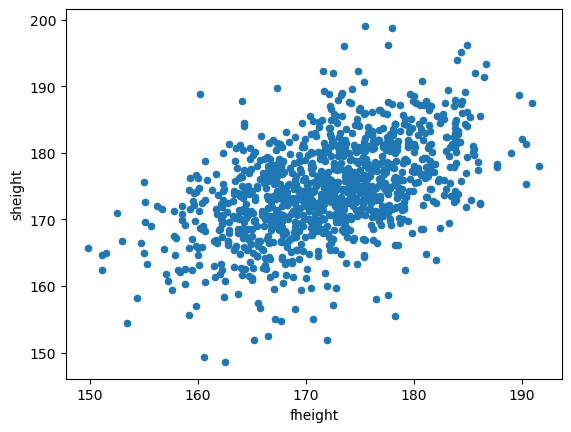
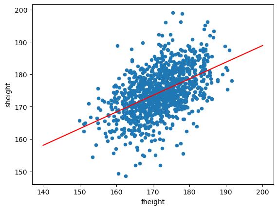

<AxesSubplot:xlabel='fheight', ylabel='sheight'>
산점도를 보면 아버지의 키가 증가하면 아들의 키도 증가하는 경향(trend)을 보인다.
구간을 여러개 나누고 평균을 찍어봤더니?
- 4개의 그룹별 평균이 마치 하나의 직선위에 있는 것 처럼 보임.
즉 다음과 같은 관계가 대략적으로 성립함.
구간나누는 코드는 일단 생략
\[\text{mean of son's height} \approx \beta_0 + \beta_1\text{(father's height)}\]
선형회귀모형
데이터 과학에서는 설명변수 \(x\)와 반응변수 \(y\)의 관계를 나타내주는
모형을 찾는 것이 중요.- 모형을 찾으면 설명변수로 반응변수를 설명할 수 있음.
- 찾아낸 모형을 통해서 예측,분류등의 작업을 수행할 수 있음
통계학에서 모형을 찾는 과정을 회귀분석 이라 함
회귀분석의 목적 : 설명변수\(x\)와 반응변수\(y\)사이의 관계를 찾자.
선형회귀
- 회귀분석의 가장 기본적인 form.
- 반응변수 \(y\)의 평균이 \(x\)와 선형관계(직선,linear)에 있다고 가정.
선형회귀의 목적(ver1) : 설명변수 \(x\)와 반응변수 \(y\)사이의 관계를 잘 설명하는
직선을 찾자.관계를 잘 설명한다.
- \(\Longleftrightarrow\) \(x\)를 입력으로주면 \(y\)값의 흐름,경향을 잘 따라가는 직선을 찾자.
- \(\Longleftrightarrow\) \(x\)를 입력으로 줄 때, \(y\)의 평균을 잘 따라가는 직선을 찾자.
선형회귀의 목적(ver2) : 설명변수 \(x\)가 입력일 때, \(y\)의 평균을 output하는
직선을 찾자.
\[ \begin{aligned} E(y|x) = \beta_0 + \beta_1x \end{aligned} \]
최소제곱법
- 직선을 어떻게 찾을 수 있을까?
x는 이미 우리가 알고 있는 관측한 값이기에 \(\beta_0,\beta_1\)만 찾으면 됨.
- i.e. \(\beta_0,\beta_1\)은 어떻게 찾을 수 있을까?
- 최소제곱법(least squares)를 사용.
(최소제곱법)
- Given data set \(\{{x_i},y_i\}_{i=1}^n\,,e_i = y_i - [\beta_0 + \beta_1x_i]\)
\[ \begin{aligned} \beta_0,\beta_1 = \underset{\beta_0,\beta_1}{\text{argmin}}\sum_{i=1}^ne_i^2 =\underset{\beta_0,\beta_1}{\text{argmin}}\sum_{i=1}^n(y_i - [\beta_0 + \beta_1x_i)])^2 \end{aligned} \]
- 즉, 관측된 실제값 \(y\)와 가정한 직선위에 있는 점 사이의 L2-distance(거리)의 제곱을 최소화하는 값으로 \(\beta_0,\beta_1\)를 결정하는 방법.
- 왜 절댓값을 안써?
- 미분하기 어려워(뾰족점)
- 왜 거리를 제곱?
- 에러는 음수 or 양수가 나올 수 있음 \(\to\) 오차가 있지만 상쇄되어버릴 수 있음. 따라서 +만 나오게 함.
(최소제곱법의 해 - 선형회귀의 경우)
\[ \begin{aligned} &\hat\beta_1 = r\frac{SD_y}{SD_x},\quad\hat\beta_0 = \bar y - \hat\beta_1\bar x \\ &\text{Where ,} \\ &r : \text{x,y사이의 상관계수}\\ &\bar x : \text{x의 평균}\\ &\bar y : \text{y의 평균}\\ &SD_x : \text{x의 표준편차}\\ &SD_y : \text{y의 표준편차}\\ \end{aligned} \]
(구현)
father_son_df
def least_squares_fit(df,x_name,y_name):
x = np.array(df[x_name])
y = np.array(df[y_name])
x_bar = np.mean(x)
y_bar = np.mean(y)
SD_x = np.std(x,ddof=1)
SD_y = np.std(y,ddof=1)
x_st = (x-x_bar)/SD_x
y_st = (y-y_bar)/SD_y
r = np.sum(x_st * y_st)/len(x)
β_1 = r*SD_y/SD_x
β_0 = y_bar - β_1 * x_bar
return β_0,β_1
hat_b0,hat_b1 = least_squares_fit(father_son_df,"fheight","sheight")
hat_b0,hat_b1(86.15396537649046, 0.5136161434112265)father_son_df.plot.scatter(x="fheight",y="sheight")
x = np.linspace(140,200,500)
y = hat_b0 + hat_b1 * x
plt.plot(x,y,color="red")
plt.show()
- 추정된 회귀직선은 \(E(y|x) = 86.15 + 0.51x\)이다.
- \(\beta_1 = 1\)의 의미 : 아버지의 키가 1cm 크면 아들의 키도 평균적으로 0.51cm 증가함을 의미한다.
- \(\beta_0\) : 기준값(offset)느낌
- Note : 회귀직선은 평균값을 출력한다. 평균값을 출력하므로 예측값과 실제값간의 약간의 오차는 있을 수 있다.